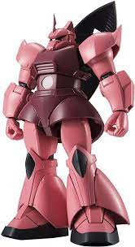

โมบิลสูท อาวุธรูปร่างคล้ายมนุษย์ที่ถูกสร้างขึ้นมา เพื่อใช้ตอบโต้สหพันธ์โลก ซึ่งถูกสร้างโดยดร.เทรนอฟ ไมนอฟสกี้ โดยโมบิลสูททั้งหมดของชาร์ มีดังนี้...
MS-05S Char's Zaku I โมบิลสูทตัวแรกของชาร์ที่ใช้ในปฏิบัติการชิงตัวดร.เทรนอฟ ไมนอฟสกี้ ณ ดวงจันทร์
MS-05 Zaku I ติดอาวุธด้วยอาวุธระยะไกลและโล่ที่ติดอยู่ที่ปลายแขน และ ในการต่อสู้ระยะประชิด มันถูกออกแบบมาเพื่อโจมตีชนโดยใช้เกราะที่ติดอยู่ที่ไหล่ซ้ายของมัน อย่างไรก็ตาม มีการเสนอแนวคิดบางประการสำหรับการแก้ไขโดยอิงจากข้อมูลการทดสอบความคล่องตัว ได้มีการพัฒนาโล่ชนิดใหม่ที่ติดตั้งไว้ที่ไหล่ขวา ซึ่งสามารถปกป้องเครื่องได้ในพื้นที่ที่กว้างขึ้น และสำหรับการโจมตี ได้มีการแนะนำเกราะไหล่ซ้ายแบบใหม่ โดยติดตั้งเดือยแหลมเพื่อเพิ่มความเสียหายระหว่างการโจมตีด้วยการชน นอกจากปืนกล MS มาตรฐาน (ประเภทดรัมแม็กกาซีน) และปืนบาซูก้า Type A1 MS แล้ว ปืนกล MS (แบบป้อนสายพาน) ยังได้รับการพัฒนา ซึ่งเพิ่มกระสุนด้วยกลไกการป้อนที่ติดตั้งที่ด้านหลังของโมบิลสูท อุปกรณ์ใหม่นี้ ซึ่งขจัดปัญหาของ MS-05 Zaku I ได้รับการออกแบบมาเพื่อใช้งานโดย MS-06 Zaku II ที่ปรับปรุงแล้วซึ่งได้รับการพัฒนาขึ้นอย่างรวดเร็ว
MS-06S Zaku II โมบิลสูทของชาร์ตัวที่สอง และเป็นตัวทีี่สร้างฉายา"ดาวหางสีแดง"อีกด้วย
MS-06S Zaku II ของ Char เป็นรุ่นสั่งทำพิเศษของ MS-06S Zaku II Commander Type มาตรฐาน (MS-06F Zaku II ที่ปรับปรุงโดยรวมแล้ว) ซึ่งทาสีด้วยสีแดงส่วนตัวของเขา ในฐานะที่เป็นหน่วยบัญชาการ ก็มีการตกแต่งคล้ายเขาเขาติดอยู่ที่ศีรษะด้วย แม้จะมีความเสี่ยงสูง แต่ Char ก็สั่งให้ถอดลิมิตลิมิตออกเป็นการส่วนตัว อนุญาตให้ใช้ขับดันจนถึงขีดจำกัดสูงสุด กลยุทธ์การตีแล้วหนีที่เกิดจากแรงขับที่สูง และความประทับใจจากสีสันอันโดดเด่นที่เกิดขึ้นในสนามรบ ทำให้เกิดชื่อเล่นของ Char คือ "ดาวหางแดง" หลังจาก Clash of Loum พลเรือโท โดเซิล ได้แอบสั่งให้ ชาร์ เข้าบัญชาการ Falmer ซึ่งเป็นเรือประจัญบานคลาส Musai แบบกำหนดเอง และตรายูนิตและเครื่องหมายชัยชนะถูกนำไปใช้กับ MS-06S ของเขา ซึ่งรวมถึงเส้นสีขาวสว่างที่บ่งบอกว่าเป็นหน่วยบัญชาการ หมายเลขหน่วย "A12" และตราสัญลักษณ์ของ Falmer

MSM-07S Z'Gok โมบิลสูทของชาร์ตัวที่สาม โมบิลสูทโจมตีแบบสะเทินน้ำสะเทินบกของซีอ้อนที่นำทัพบุกจาโบร
MSM-07S Z'Gok โมเดล Z'Gok ของชาร์ที่ได้รับการปรับปรุงและมีประสิทธิภาพสูงขึ้น มีเอาต์พุตของเครื่องปฏิกรณ์ที่สูงขึ้น ความคล่องแคล่วที่ดีขึ้น และการเปลี่ยนแปลงในวัสดุเกราะ ในที่สุดก็กลายเป็นโมเดล Z'Gok แบบมาตรฐาน
MS-14S Gelgoog โมบิลสูทของชาร์ตัวที่สี่ โมบิลสูทที่สู้สูสีกับกันดั้มของสหพันธ์โลกได้
MS-14S Gelgoog มีเครื่องกำเนิดไฟฟ้ากำลังสูง เครื่องขับดันแบบต่างๆ เพื่อช่วยในการเคลื่อนที่ โล่รูปวงรีขนาดใหญ่ ไรเฟิลบีม และบีม นากินาตะ MS-14S Gelgoog Commander Type เทียบได้กับความสามารถของกันดั้ม RX-78-2 ของสหพันธ์โลก ในความเป็นจริงเมื่อเทียบกับ Gundam แล้ว Gelgoog Commander Type นั้นเร็วกว่าเล็กน้อย คล่องตัวกว่า และมีตัวสร้างที่ทรงพลังกว่าและการเลือกอาวุธบีม สิ่งนี้ได้รับการพิสูจน์โดยชาร์ ในระหว่างการออกรบครั้งแรกในหน่วยส่วนตัวของเขากับ Gundam ของอามุโร่ เรย์ ในช่วงสงครามหนึ่งปี ในทางกลับกัน มันมีเกราะที่บางกว่าและทนทานน้อยกว่า Gundam และการขาดอาวุธในตัวทำให้ Gelgoog ปลดอาวุธและทิ้งอาวุธได้ง่ายขึ้น
MSN-02 Zeong โมบิลสูทของชาร์ตัวที่ห้า ตัวสุดท้ายที่ใช้ในสงคราม1ปี
MSN-02 Zeong ได้รับการพัฒนาโดยอาณาเขตของ Zeon ที่ป้อมปราการอวกาศ A Baoa Qu ในช่วงสงครามหนึ่งปี Zeong ถูกสร้างขึ้นสำหรับนักบิน Newtype โดยเฉพาะ เริ่มแรกมีหมายเลขรุ่น "MS-16X" และได้รับการพัฒนาตามข้อมูลของหน่วยทดลองหลายหน่วย Zeong ยังเป็นโมบิลสูทตัวแรกที่ใช้ระบบ Psycommu ซึ่งอนุญาตให้นักบิน Newtype ใช้ปลายแขนควบคุมระยะไกลแบบมีสายนำทางสำหรับการโจมตีทุกระยะอย่างมีประสิทธิภาพ ปลายแขนแต่ละข้างสร้างขึ้นด้วยปืนใหญ่อนุภาคขนาดใหญ่ห้านิ้ว Zeong ยังมีปืนใหญ่อนุภาคขนาดใหญ่อีกสามกระบอกบนตัวของมัน สองกระบอกที่เอว และหนึ่งกระบอกที่หัว Zeong คาดว่าจะสูงประมาณ 35 เมตรเมื่อสร้างเสร็จแล้ว ทำให้มีขนาดใหญ่กว่าโมบิลสูทส่วนใหญ่ในสมัยนั้นมาก ขนาดใหญ่เกิดจากความยากลำบากในการย่อระบบ Psycommu แม้ว่าอีกบัญชีหนึ่งจะแนะนำว่าเป็นเพราะความต้องการเครื่องกำเนิดไฟฟ้าขนาดใหญ่เพื่อจ่ายพลังงานให้กับปืนใหญ่อนุภาคขนาดใหญ่สิบสามเครื่อง ในท้ายที่สุด โมบิลสูทนี้เสร็จสมบูรณ์เพียง 80% เมื่อมันถูกนำไปใช้ ดังนั้นจึงขาดขาและท่อนแขนที่เปลือยเปล่า แม้ว่าขาทั้งสองข้างจะช่วยในระบบ AMBAC แต่การละเลยของพวกมันไม่ได้ขัดขวาง Zeong จากการสู้รบ 100% เนื่องจากมีการติดตั้งเครื่องขับจรวดสองเครื่องในตำแหน่งที่ควรจะเป็นแม้ว่า Zeong จะได้รับการพัฒนาสำหรับ Newtypes แต่ก็สามารถใช้งานได้โดยนักบินทั่วไป ในสถานการณ์เช่นนี้ โมบิลสูทจะถูกควบคุมโดยนักบินในห้องนักบินลำตัวและมือปืนในห้องนักบิน ห้องนักบินทั้งสองเชื่อมต่อกันด้วยท่อขวาง ในทางตรงกันข้าม นักบินนิวไทป์เพียงคนเดียวสามารถควบคุม Zeong ได้อย่างเต็มที่จากห้องนักบินส่วนใดส่วนหนึ่ง แม้ว่าเนื่องจากลักษณะต้นแบบของโมบิลสูท การเปิดใช้งานและการเริ่มต้นทำได้เฉพาะในห้องนักบินลำตัวเท่านั้น เพื่อให้แน่ใจในการกู้คืนข้อมูลและนักบิน โดยเฉพาะอย่างยิ่งถ้านักบินเป็นแบบนิวไทป์ ส่วนหัวยังเพิ่มเป็นสองเท่าของหน่วยหนีภัย และสามารถถอดออกจากตัวเครื่องได้เมื่อจำเป็น
RMS-099 Rick-Dias,γ Gundam(Gamma Gundam) โมบิลสูทของควอโทร บาจีน่า มีอีกชื่อนึงคือ แกมม่ากันดั้ม
RMS-099 Rick-Dias พัฒนาโดย Anaheim Electronics RMS-099 (MSA-099, MSA-009) Rick Dias (ชื่อรหัส: "γ Gundam" (Gamma Gundam) กลายเป็นหนึ่งในโมบิลสูทที่ผลิตจำนวนมากชุดแรกของ Zeta Project ของ AEUG สำหรับการต่อสู้กับ พวก Titans ที่ทุจริต เนื่องจากวิศวกรหลายคนที่ทำงานเกี่ยวกับ Rick Dias เป็นอดีตอาณาเขตของสมาชิก Zeon Rick Dias จึงมีความคล้ายคลึงกันมากกับโมบิลสูทของ Zeon เช่นเซ็นเซอร์ตาเดียว Rick Dias ("Dias" มาจาก Bartolomeu Dias นักสำรวจชาวโปรตุเกสที่ปัดเศษแหลมกู๊ดโฮปเป็นครั้งแรก) มีชื่อเดิมว่า Gundam γ เนื่องจากสร้างขึ้นจาก Gundarium γ ใหม่ วัสดุนี้ได้รับการพัฒนาโดย Axis และมีความแข็งแกร่งคล้ายกับ Gundarium มาตรฐานแต่มีน้ำหนักเบากว่าในเชิงโครงสร้าง ชุดเบาลงและทำให้สามารถรองรับความจุเชื้อเพลิงได้มากขึ้น Rick Dias เป็นหนึ่งในโมบิลสูทรุ่นก่อนๆ ที่ใช้ห้องนักบินแบบพาโนรามา 360 องศา และเป็นการออกแบบดั้งเดิมชิ้นแรกที่ AEUG สร้างขึ้น คุณลักษณะเด่นประการหนึ่งคือ ไม่เหมือนกับโมบิลสูทอื่นๆ ในขณะนั้น ห้องนักบินของ Rick Dias ถูกสร้างขึ้นที่ศีรษะและไม่ใช่ที่หน้าอก ปืนกลแบบพิเศษที่ติดมากับมือของมันคือปืนกลแบบพิเศษที่สามารถใช้ยิงแก๊สดับไฟหรือกาวยึดติด สำหรับการต่อสู้ Rick Dias นั้นติดตั้งอาวุธที่หลากหลาย ทำให้มันเป็นโมบิลสูทเอนกประสงค์ ในบรรดาอาวุธที่ติดมาในตัวของมันนั้นรวมถึงปืนกลวัลแคนขนาด 55 มม. ที่หัวและบีมเซเบอร์ที่เก็บไว้ที่ด้านล่างของชั้นวางแบบสะพายหลัง สำหรับการต่อสู้ระยะไกล Rick Dias ได้ติดตั้งปืนบีมคู่หนึ่งที่เก็บไว้ในแร็คแบบสะพายหลัง นอกจากนี้ยังสามารถเลือกติดตั้งปืนยิงรถถังดินเผาและบีมไรเฟิลได้อีกด้วย
MSN-00100 Hyaku Shiki โมบิลสูทของควอโทร บาจีน่า มัจจุราชสีทองกลางอวกาศ
MSN-00100 Hyaku Shiki เป็นโมบิลสูทที่สร้างโดย Anaheim Electronics โดยเป็นส่วนหนึ่งของ "Zeta Project" เดิมทีได้รับการออกแบบให้เป็นโมบิลสูทที่แปลงร่างได้ต้นแบบ MSN-001 Delta Gundam ซึ่งรวมเอาเทคโนโลยี "movable frame" ของ Anaheim Electronics เองและตัวยึดปีกแบบติดกระเป๋าเป้สะพายหลังเพื่อความคล่องตัวเพิ่มเติม อย่างไรก็ตาม ข้อบกพร่องในการออกแบบเฟรมทำให้เกิดปัญหาในการเปลี่ยนแปลง และการพัฒนาเครื่องจักรก็ถูกยกเลิกในไม่ช้า เมื่อ AEUG จับ RX-178 Gundam Mk-II ของ Titans ได้ เทคโนโลยีเฟรมที่เคลื่อนย้ายได้ของโมบิลสูทที่ได้มาใหม่นี้ช่วยอย่างมากในความก้าวหน้าของ Zeta Project และยังนำไปสู่การออกแบบใหม่ของ Delta Gundam ให้เป็นประสิทธิภาพสูง Hyaku Shiki ที่ไม่สามารถแปลงร่างได้ Hyaku Shiki ซึ่งแปลว่า 'ประเภท 100' ในภาษาญี่ปุ่น ได้รับการตั้งชื่อตามผู้พัฒนาหลักคือศาสตราจารย์ M.Nagano ผู้ซึ่งหวังจะสร้างการออกแบบโมบิลสูทที่จะคงอยู่ได้นานถึงร้อยปี เนื่องจากความน่าเชื่อถือของแต่ละอุปกรณ์และความสะดวกในการเข้าถึงภายใน Hyaku Shiki จึงได้รับบทบาทเป็นห้องทดสอบสำหรับการทดสอบการทำงานของอุปกรณ์ต่างๆ ที่อยู่ระหว่างการพัฒนา รูปลักษณ์สีทองของ Hyaku Shiki เกิดจากการเคลือบป้องกันลำแสงบนเกราะ ทำให้สามารถป้องกันการโจมตีด้วยลำแสงได้อย่างจำกัด ชุดยังมีเซ็นเซอร์พิเศษที่เรียกว่าระบบ Image Directive Encode (IDE) ซึ่งปล่อยรูปแบบสีแดงเมื่อสแกนหรือในระหว่างการเล็งที่แม่นยำ มันยังคงคุณสมบัติการออกแบบหลายอย่างจากการออกแบบดั้งเดิมของเดลต้า กันดั้ม ที่โดดเด่นที่สุดคือเกราะหน้าของขาและตัวยึดปีกแบบสะพายเป้ ความสามารถในการแปลงร่างของ Delta Gundam ปรากฏใน MSN-001A1 Delta Plus ในภายหลัง
MSN-04 Sazabi หุ่นตัวแรก ตัวเดียว และตัวสุดท้ายของชาร์ ในการเป็นผู้นำของNeo Zeon
MSN-04 Sazabi หลังจากที่ชาร์ อัสนาเบิ้ล กลับมาเป็นผู้นำของกลุ่ม Neo Zeon ของเขาเองใน U.C. 0093 เขาสั่งให้วิศวกรของเขาสร้างโมบิลสูทใหม่ที่เหมาะกับทักษะการขับเครื่องบินและพลังของนิวไทป์ ผลที่ได้คือ MSN-04 Sazabi ซึ่งต่อมาถูกสร้างขึ้นโดย Anaheim Electronics ซึ่งเป็นผู้รับเหมาของ Luna ด้วยความสูงโดยรวม 25.6 เมตร Sazabi นั้นใหญ่กว่าโมบิลสูทมาตรฐานส่วนใหญ่มาก แต่ต้องขอบคุณการใช้วัสดุเกราะน้ำหนักเบาและตัวขับดันจำนวนมาก มันจึงเร็วและคล่องแคล่วกว่าโมบิลสูทอื่นๆมาก ชุดดังกล่าวติดอาวุธด้วยปืนใหญ่อนุภาคขนาดมหึมาที่ติดตั้งหน้าท้อง ปืนไรเฟิลบีมช็อต บีมเซเบอร์คู่หนึ่งที่เก็บไว้ในอ้อมแขน และโล่พร้อมขีปนาวุธสามลูกและลำแสงโทมาฮอว์ก เนื่องจากชาร์เป็นNewtype Sazabi จึงติดตั้งช่องทางหกช่องทางซึ่งนักบินสามารถควบคุมผ่านคลื่นไซโคเวฟของเขาผ่านระบบPsycommu Sazabiยังเป็น MS ตัวแรกที่ติดตั้งห้องนักบิน psycoframe ใหม่ที่ปฏิวัติวงการ ระบบนี้มีวงจรรับสัญญาณไซคอมมูด้วยกล้องจุลทรรศน์ที่ติดตั้งทั่วทั้งเฟรมภายในของโมบิลสูทและผนังห้องนักบิน วงจรขนาดเล็กเหล่านี้จะขยายและส่งคลื่นไซโคเวฟของนักบิน Newtype ทำให้โมบิลสูทตอบสนองต่อคำสั่งทางจิตในทันที